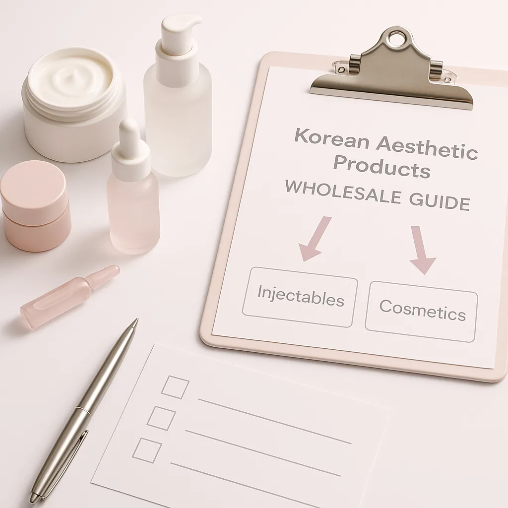
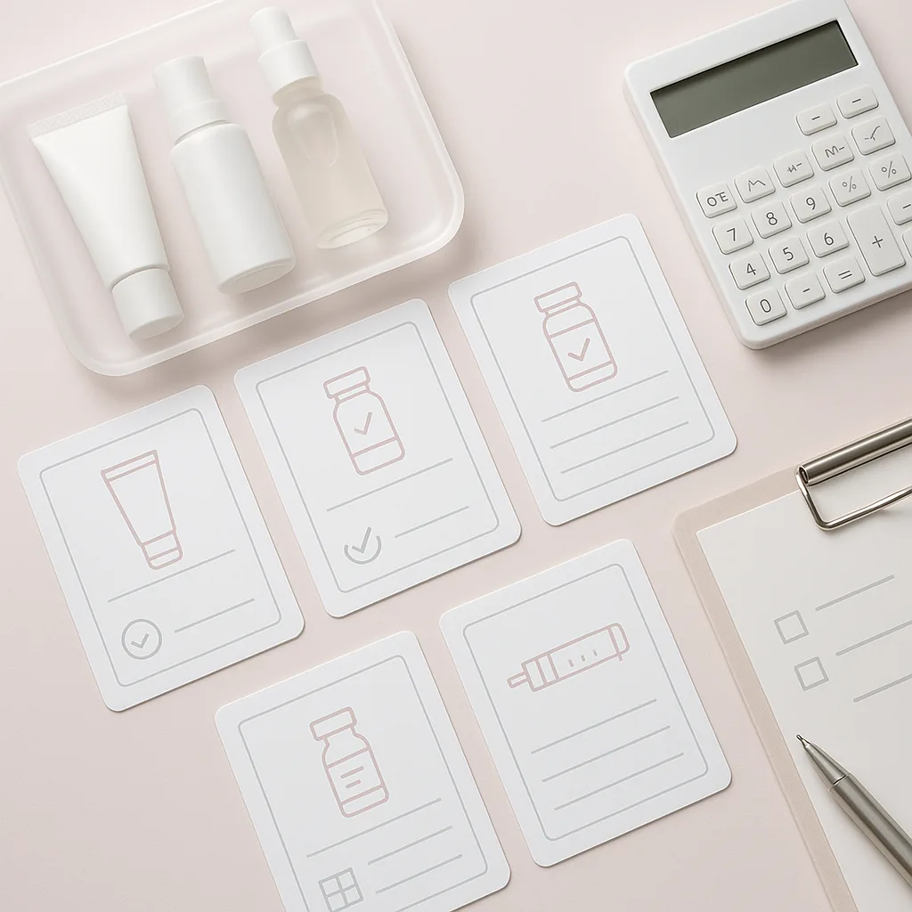
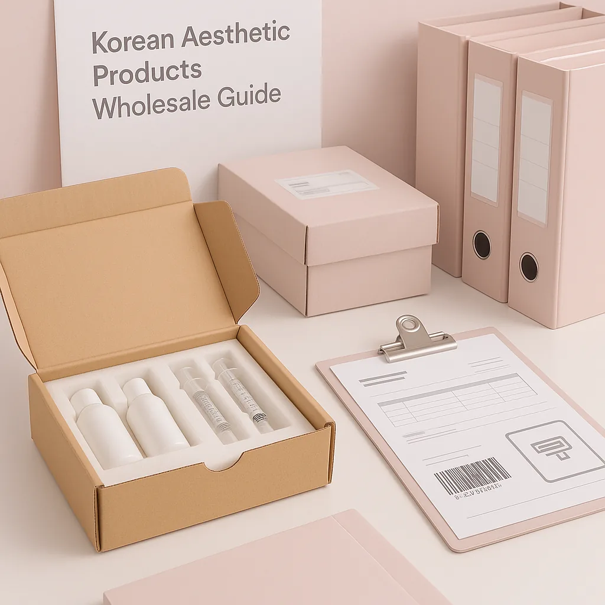

This guide provides essential insights for clinics, spas, and resellers on sourcing Korean aesthetic products wholesale.
For professional buyers in the aesthetic industry, sourcing high-quality products can be a daunting task. The growing popularity of Korean aesthetic products presents both opportunities and challenges. Understanding how to navigate the wholesale landscape is crucial for clinics, spas, and resellers looking to meet consumer demand while maintaining profitability.
This Korean aesthetic products wholesale guide aims to simplify the sourcing process. By providing clear insights and practical advice, buyers can make informed decisions that enhance their product offerings and streamline procurement. The right products can not only attract more clients but also elevate the overall service experience in your business.
Key Takeaways
- Establish strong communication with suppliers to facilitate efficient order processing and resolve issues quickly.
- Evaluate product types and brands carefully to ensure alignment with your business's target market and service offerings.
- Consider packaging options and batch visibility to maintain product integrity and compliance with regulations.
- Plan your minimum order quantities (MOQ) based on realistic sales forecasts to optimize inventory management.
- Stay informed about shipping requirements and necessary documentation to prevent delays and ensure smooth logistics.
What this guide covers
- Understanding Korean aesthetic products
- Identifying relevant buyers
- Comparison criteria for sourcing
- Checklist before requesting a quote
- Logistics and documentation considerations
- MOQ and reorder planning
- Frequently asked questions
What buyers should understand first

Korean aesthetic products encompass a diverse range of items designed to enhance beauty and skincare. This category includes serums, masks, injectables, and other innovative formulations that have gained global acclaim for their effectiveness. For clinics, spas, and resellers, understanding the unique attributes of these products is essential for making informed purchasing decisions. Buyers should focus on quality, brand reputation, and compliance with local regulations when considering these products for their offerings.
Moreover, the Korean beauty industry is known for its commitment to research and development, leading to cutting-edge products that often outperform traditional alternatives. This makes sourcing Korean aesthetic products not just a trend but a strategic move to stay competitive in the beauty market.
Which buyers is this most relevant for?
This guide is particularly relevant for professional buyers in various sectors, including:
- Clinics: Medical professionals looking to expand their aesthetic treatment options with high-quality products.
- Spas: Businesses aiming to enhance their service menu with trending Korean products that attract clientele.
- Resellers: Retailers seeking popular items to draw in customers and boost sales.
- Distributors: Companies looking to supply aesthetic products to clinics and spas, ensuring a steady flow of inventory.
Each of these buyer scenarios requires careful order planning and evaluation of product offerings to ensure they meet the specific needs of their clientele. Understanding the unique demands of your target market will help you curate a product selection that resonates with your customers.
How to compare options before ordering
When evaluating Korean aesthetic products for wholesale, consider the following criteria:
- Product Type: Identify the specific products that align with your business model and customer preferences.
- Brand Reputation: Research the brands to ensure quality and reliability, looking for reviews and testimonials from other buyers.
- Packaging: Assess whether the packaging meets your branding and storage requirements, as well as its appeal to consumers.
- Batch and Expiry Visibility: Ensure that suppliers provide clear information on product batches and expiry dates to maintain product safety.
- Supplier Communication: Evaluate how responsive and informative suppliers are during the inquiry process, which can indicate their reliability.
- Destination Requirements: Understand any specific shipping or customs requirements for your location to avoid complications.
Buyer checklist before requesting a quote


- Define your product needs and specifications clearly.
- Determine your budget and pricing expectations to guide your negotiations.
- Clarify your minimum order quantities (MOQ) based on your sales projections.
- Prepare a list of preferred brands and product types to streamline your sourcing.
- Identify any specific packaging requirements that align with your brand.
- Gather necessary documentation for import/export compliance to ensure smooth transactions.
- Prepare questions for the supplier regarding shipping and delivery timelines to set expectations.
Shipping, packing and documentation questions
Logistics play a crucial role in the wholesale procurement process. Buyers should consider the following questions:
- What are the shipping options available and their associated costs?
- How will the products be packed to ensure safe delivery and prevent damage?
- What documentation is required for customs clearance, and who is responsible for obtaining it?
- Are there any specific regulations for importing aesthetic products in your country that you need to be aware of?
- How can you track your shipment once it is dispatched to ensure timely delivery?
MOQ, quotation and reorder planning
Preparing for your order involves understanding your quantities and variants. Here’s how to approach it:
- Analyze your sales data to forecast demand and determine your MOQ, ensuring you don’t overstock or run out of popular items.
- Consider seasonal variations that may affect product sales, adjusting your orders accordingly.
- Discuss with your supplier about available variants and their impact on pricing to find the best options for your budget.
- Provide clear destination details to your supplier for accurate shipping quotes and timelines.
- Contact SOLA to confirm current availability and obtain a wholesale quotation tailored to your needs, ensuring you have the best options available.
FAQ
What are the most popular Korean aesthetic products?
Popular products include serums, sheet masks, and injectables known for their innovative formulations and effectiveness.
How do I ensure product quality when sourcing?
Research brands and suppliers, and request samples to evaluate quality before placing larger orders to mitigate risks.
What is the typical MOQ for Korean aesthetic products?
MOQ varies by supplier and product type; it's essential to discuss this during your initial inquiries to align with your business needs.
How can I track my order once it’s shipped?
Most suppliers provide tracking information; ensure you request this at the time of order confirmation to stay updated on your shipment.
What documentation do I need for importing?
Documentation requirements vary by country; consult local regulations and your supplier for specific needs to ensure compliance.
Contact SOLA for wholesale quotation via WhatsApp.
Planning a wholesale request?
Send product names, quantities and destination for a tailored discussion.
Contact SOLA on WhatsApp →General educational content for professional buyers. Not medical, legal, regulatory or import advice.